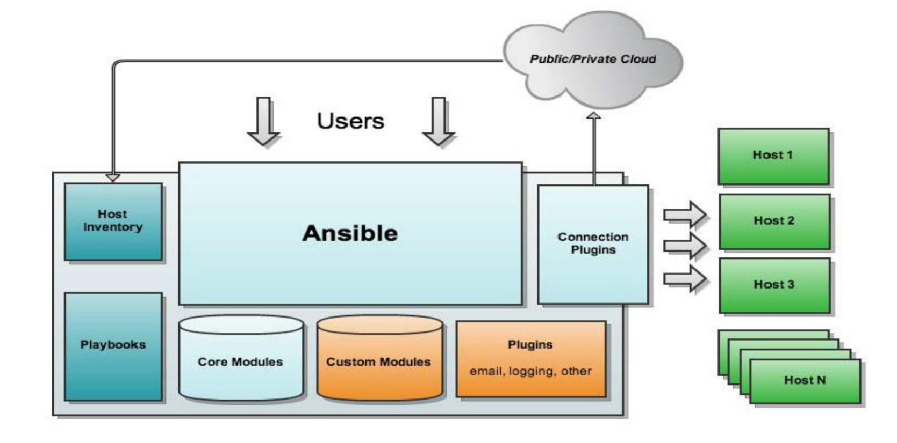

自动化运维之Ansible（一）
自动化运维之Ansible（一）
工作中经常会面临到机器非常多，所接触到的主机可能是成百上千台以上，所以在管理那么多主机时必须要使用自动化管理工具对其进行管理，此时如果使用手工进行管理将是非常的费时费力的。
自动化运维应用场景
自动化运维工具的应用场景通常会涉及到以下几种环境：
文件传输：比如将某软件的配置文件在某台服务器上配置完成，配置完成后要将其配置文件传送到其他的所有服务器上去，让其他的服务器上的软件也实现相同功能。
应用部署：比如说在某些服务器上安装一个数据库、一个web服务器软件或者缓存服务器的软件，对一批服务器进行批量的部署软件
配置管理：软件部署完毕后还需要对软件的配置文件进行批量的配置和管理，对配置文件进行批量的修改。
任务流编排：类似于编写脚本，对任务的顺序进行编排，人工手动执行过于麻烦
常用自动化运维工具
Ansible：红帽公司的员工所研发，后来被红帽公司收购。使用python编写，ansible是无代理的，无代理表示安装ansible的机器可以对成千上万台机器进行管理，而被管理的软件无需安装客户端就可以被ansible管理，这主要是因为ansible是基于ssh-key验证来实现的，只要ssh-key通过验证就能对其进行管理。
Saltstack：使用python编写，一般需要部署agent，执行效率更高
Puppet：使用ruby编写，适用于超大环境使用，功能强大，配置复杂。
Fabric：python编写，无代理agentless
chef：ruby编写，国内应用少
Cfengine:
func:
Ansible的特性
模块化：调用特定的模块，完成特定的任务，有Paramiko，Jinja2（模板语言）三个关键模块，支持自定义模块。
部署简单：基于Python和SSH，agentless无代理，安全性高基于OpenSSH。
支持Playbook编排任务。
幂等性：一个任务执行一 次和执行N次的效果相同，不因重复执行而带来以为情况。
YAML格式：编排任务，支持丰富的数据结构，拥有比较强大的多层解决方案。
Ansible的架构
Host Inventory：我们可以通过多种方式来使用ansible，我们可以通过用户直接使用ansible命令来使用ansible，在使用ansible之前需要配置一份主机清单，在主机清单中列出哪些主机是需要被ansible所管理的。
Public/Priviate Could：用户也可以通过开发接口来管理使用ansible，比如企业内部使用共有云或私有云来管理使用ansible。
Playbooks：企业内部也可以编写playbook，playbook中可以根据规划加入条件判断和循环，其用法类似于脚本。
Core Modules：ansible在使用时其背后还有各种不同的模块，其使用各种不同的模块来支持管理和配置不同的主机上的各种设置。其模块可以理解为各种命令，比如文件操作的命令，用户管理的命令，软件包管理的命令等等。
Custom Modules：ansible还支持自定义的模块，可以由用户自己开发各种模块。
Plugins：ansible支持各种插件，比如邮件、登录、等等。
Connection Plugins：以上所提到的工具最终将通过连接插件连接到被控制的主机上，从而来控制需要管理的主机。

Ansible的使用方法
Ansible的使用方法有两种Ad-Hoc和ansible-playbook。
Ad-Hoc：即ansible命令，主要用于临时命令使用场景
Ansible-playbook：主要用于长期规划好的，大型项目的场景，需要有前期的规划过程
注意事项
执行ansible的主机一般称为主控端，中控，master或堡垒机
主控端Python版本需要2.6或以上
被控端Python版本小于2.4需要安装python-simplejson
被控端如开启SELinux需要安装libselinux-python
windows不能做为主控端